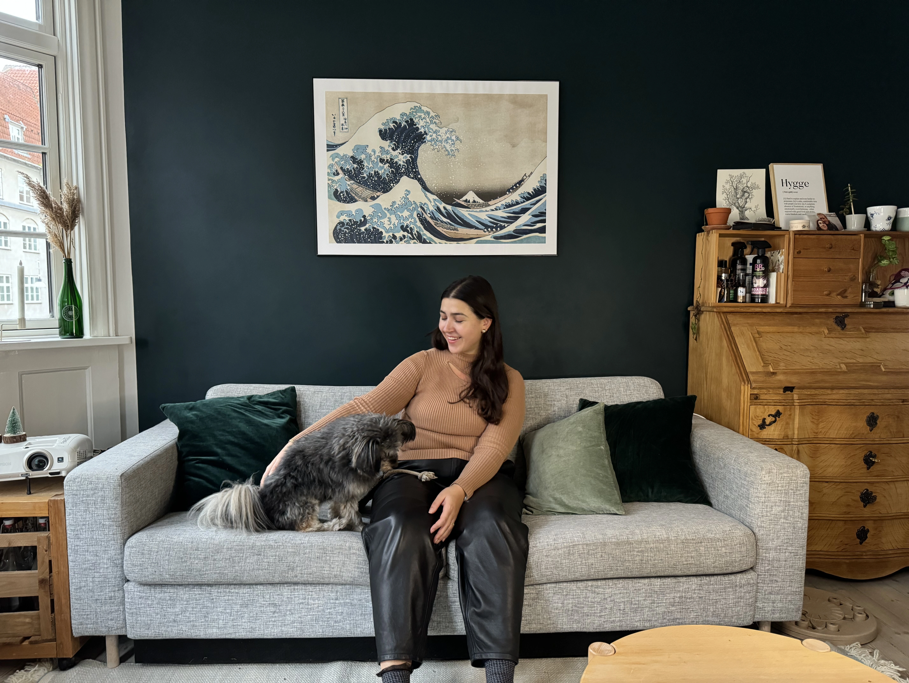

Hovedperson og handling
Amarilla Mirilo er 33 år gammel og bor på Amagerbro med sin hund og kæreste. Hun har en stor passion for sit arbejde som model, og udlever sin drøm til trods for, at vejen i modelbranchen kan være udfordrende. Videoen tager udgangspunkt i hendes egne oplevelser i modelbranchen og hvordan hendes passion for modebranchen opstod.
